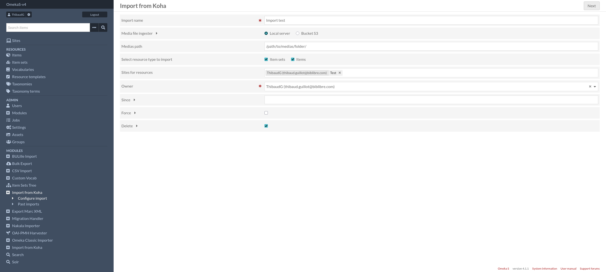
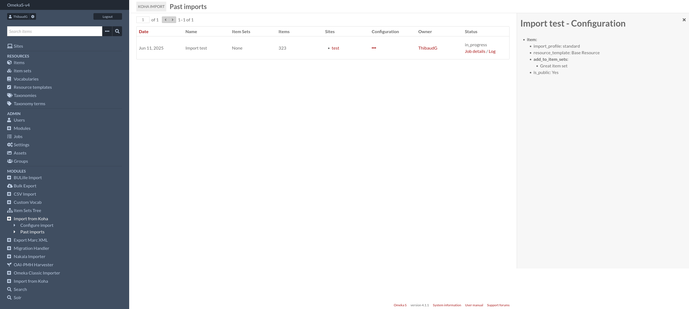

Fonctionnalités
Démarrer un import
Dans la première vue, plusieurs options sont disponibles:
Nom de l’import: utile pour préciser et identifier votre import (peut être dupliqué)
- Source des médias:
Serveur local est la solution habituelle, spécifier le chemin du dossier local contenant les médias. Si aucun chemin n’est spécifié, le traitement des médias sera ignoré.
S3 bucket: vous pouvez choisir cette option si les médias sont stockés à distance dans un bucket, mais n’oubliez pas d’indiquer sa configuration dans le fichier module.config.php.
Type de ressource à importer (requis)
Sites : ajouter les sites pour les ressources à importer.
Propriétaire (requis)
Depuis: spécifier une date formattée comme ceci “AAAA-mm-jj HH:MM:SS” pour filtrer les ressources.
Force : même si la ressource (identifiée par le biblionumber) a déjà été importée et que sa date de mise à jour est égale à la date du jour, vous pouvez forcer son import en cochant la case.
Supprimer : utiliser pour supprimer une ressource omeka-s si la ressource koha correspondante n’est plus à exporter.
Configuration par type de ressource
Après l’initialisation d’un nouvel import, vous pouvez définir des paramètres spécifiques pour chaque type de ressource. Les configurations s’appliquent sur le type de resource actif via l’onglet. Vous trouverez donc des paramètres communs:
Correspondance champ/valeur selon le type de ressource: vous pouvez filtrer les ressources, pour transformer « uniquement » les ressources correspondantes, s’applique sur le format “champ$sous-champ” avec la valeur strictement égale à l’entrée suivante.
Note
A noter que ces champs sont obligatoires si vous avez sélectionner plusieurs types de ressources Dans le cas contraire si aucun paramètre n’est renseigné, toutes les notices passant dans l’import seront transformées en ressources OmekaS en rapport avec le type de ressource précisé.
Sélectionner un profil d’import: les profiles d’import sont utilisés pour appliquer des correspondances entre les champs Koha et des propriétés OmekaS. Vous pouvez donc personnalisé les correspondances selon les types de ressource.
Classes et modèles de ressources: peuvent être définis indépendamment selon le type de ressource.
Visibilité de la ressource (requis)
Ajouter aux collections: seulement pour les ressources de type “contenu”.


Imports passés
Résumé des imports passés sur une page dédiée.
(Admin > KohaImport > Imports passés)

Et vous avez la possibilité de voir un rappel de la configuration appliquée en cliquant sur ….
